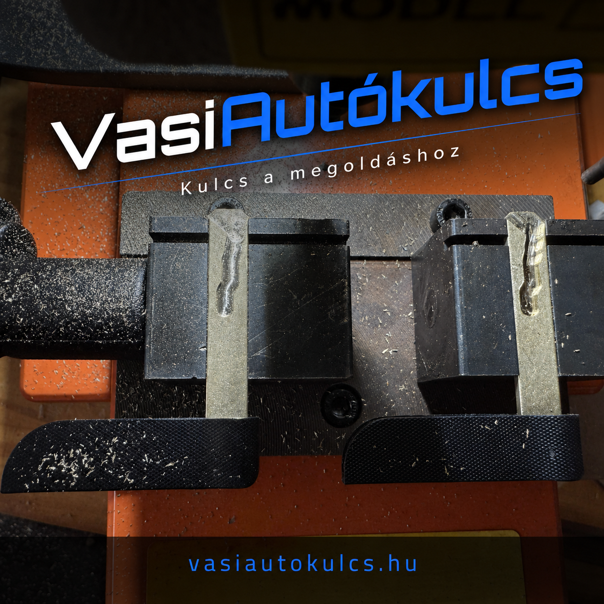
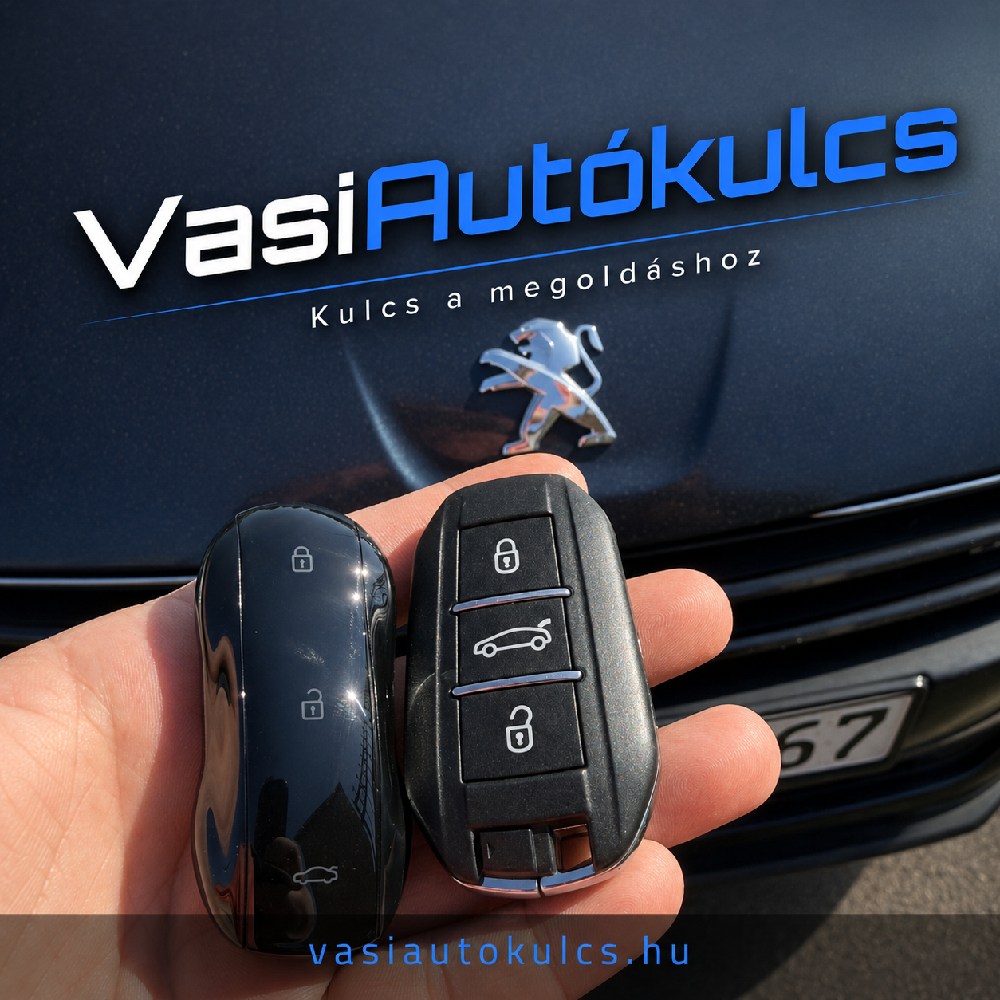
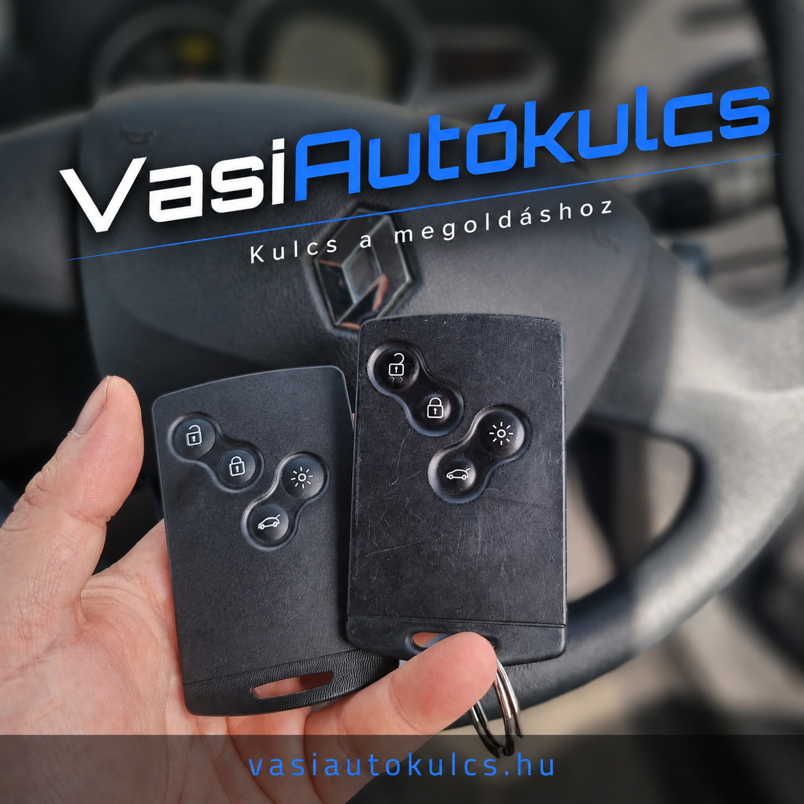

Immobilizeres autókulcsok
Immobilizeres, távirányítós és keyless (szabadkezes) autókulcsokkal kapcsolatos munkákat végzünk több támogatott márkához.
Szombathelyen | Vas vármegyei kiszállással
Szakszerű indítókártya és autókulcs tanítás, programozás, pótlás, másolás Szombathelyen, valamint Vas vármegyében és környékén. Például Peugeot, Citroën, Renault, Dacia és több más márka esetén is, a márkaszerviz árának töredékéért.
Miért minket
Immobilizeres, távirányítós és keyless (szabadkezes) autókulcsokkal kapcsolatos munkákat végzünk több támogatott márkához.
Ha az autó nem érzékeli a kulcsot, bizonytalan a nyitás vagy tartalék kulcsra van szükség, felmérjük a lehetőségeket.
Nem indítható jármű vagy teljes kulcsvesztés esetén előzetes egyeztetéssel kiszállás is kérhető.
Hibakód-kiolvasásban és jegyzőkönyvezésben is segítünk, ha az autókulcs vagy az elektronika körül bizonytalan a hiba oka.
Szolgáltatások
Immobilizeres autókulcs másolás, kulcs tanítás, programozás, keyless (szabadkezes) kulcsok, távirányítós autókulcs javítása, diagnosztika és autóklíma-tisztítás egy helyen.
Immobilizeres autókulcsok másolása, pótkulcs készítés és a szükséges kulcs tanítási, programozási lépések egy helyen.
Új kulcs tanítása, kulcs programozása, elveszett kulcs pótlása és kulcsfelismerési hibák vizsgálata.
Keyless (szabadkezes) autókulcsok javítása, pótlása és illesztése előzetes egyeztetéssel.
Távirányítós autókulcsok gomb-, ház- és működési problémáinak felmérése és javítása.
Hibakód-kiolvasás és jegyzőkönyv, ha a kulcshiba vagy az elektronikai probléma pontosítása szükséges.
Autóklíma-tisztítás és ózonos sterilizálása időpont-egyeztetéssel, vegyszermentes eljárással.
Munkáinkból
Néhány példa azokra a kulcsokra és munkafolyamatokra, amelyekkel ügyfeleink megkeresnek minket.

A kulcsszár másolása és az immobilizeres autókulcs további illesztése az autó típusától és a kulcs kivitelétől függ.

Renault, Dacia, Peugeot, Citroën és több más márka esetén is vállalunk autókulccsal kapcsolatos munkákat.

Pótkulcs készítés, kulcs tanítás, programozás és kulcsjavítás esetén a meglévő kulcsok állapota is fontos szempont.
Területek
A felsorolt települések a teljesség igénye nélkül mutatják, hol vehető igénybe szolgáltatásunk.
Márkák
Renault, Dacia, Peugeot, Citroën, Opel, Ford, Volkswagen, Audi, Škoda és több más márka autókulcsaival kapcsolatban is vállalunk előzetes felmérést.
Árak
Az árak tájékoztató jellegűek. A pontos összeg az autó típusától, évjáratától, a kulcs kivitelétől és az elvégzendő munkától függ.
27.000 Ft-tól
A pontos ár az autó típusától, évjáratától és a kulcs kivitelétől függ.
5.000 Ft
A jelenlegi ár felülvizsgálata külön megerősítéshez kötött.
6.000 Ft
A jelenlegi ár felülvizsgálata külön megerősítéshez kötött.
A Facebook-tartalom megjelenítéséhez külső tartalom engedélyezése szükséges.
A Facebook-bejegyzés megjelenítéséhez engedélyezze a külső tartalmakat.
Gyakori kérdések
Hívjon, és egyeztessük a részleteket. Bizonyos típusoknál és körülmények között lehet megoldás. A pontos lehetőség az autó típusától, évjáratától, állapotától és a helyszíni körülményektől függ.
Pótkulcsot akkor érdemes készíttetni, amikor még rendelkezésre áll legalább egy működő autókulcs, mert ilyenkor a folyamat általában egyszerűbb.
Kapcsolat
Kérjük, érkezés előtt egyeztessenek telefonon. Szombathelyen belül a kiszállás nem feláras.
Telephely:
9700 Szombathely, Puskás Tivadar utca 3.
Szolgáltatási terület:
Szombathely, Vas vármegye és egyeztetés szerint a környező térségek
Időpont:
Ügyfélfogadás előzetes időpont-egyeztetéssel.